LLM Tuning ― preference tuning・RLHF・PPO・DPO を一気通貫で理解する
pretraining と SFT を終えた「賢いが、まだ好ましくない」モデルを、人間の好みに合わせて仕上げる第 3 段階。 選好データの集め方から、Bradley-Terry による reward model、PPO の clip / KL penalty、Best-of-N、そして DPO までを、 1 時間 47 分の講義全体から省略せずに再構成する。
このレポートの作り方と補足方針。 本文は講義の英語字幕を全文精読し、公式スライド PDF と突き合わせて再構成している。 そのうえで 「はじめて聞くと詰まりやすい用語」については、講義では説明されていない背景を一次資料（原論文・Hugging Face TRL 公式ドキュメントなど）で裏取りして厚めに補った。 補足は 周辺情報 と明記したブロックにまとめてあり、登壇者が話した内容そのものではない。 講義で実際に語られた内容と補足を混同しないよう、両者は必ず区別して読んでほしい。
3 行サマリ
- preference tuning は「新しい知識を教える段階」ではなく「同じ知識の言い方を人間の好みに寄せる段階」。 SFT が「これを出せ」と教えるのに対し、preference tuning ははじめて 「これは出すな」という負のシグナル をモデルに注入できる。
- RLHF は 2 段構え。 ①ペア選好データから Bradley-Terry 定式化で reward model を学習 → ②その reward を使い PPO などの RL で LLM（policy）を更新。ただし policy・value・reward・base の 4 モデルが必要で、reward hacking・不安定性・ハイパーパラメータ地獄が付いて回る。
- DPO は「reward model を消す」再定式化。 PPO の目的関数を解析的に解いて最適 policy を求め、そこから逆算した reward を Bradley-Terry に代入すると reward が消え、選好ペアだけで回る教師あり損失になる。必要なモデルは policy と reference の 2 つ。ただし性能は「DPO が常に上」ではなく、分布シフトという固有の弱点がある。
1. この講義の位置づけ ― LLM 学習の第 3 段階
CME295 はここまで、LLM を作る工程を順番に積み上げてきた。冒頭の復習スライドがその全体像をそのまま示している。
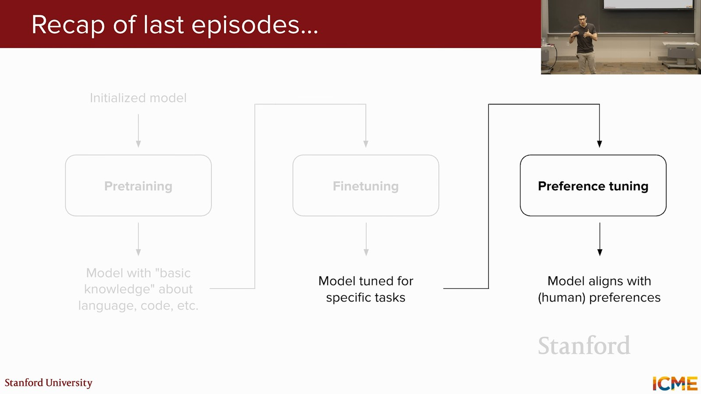
Initialized model → Pretraining → Finetuning → Preference tuning の 3 段階のうち、今回だけ Preference tuning が黒枠で強調され、その出力は「Model aligns with (human) preferences」と書かれている。04:20画像の読み解き
この図で重要なのは、3 つの段階が「何を教えるか」で明確に役割分担しているという点である。 pretraining（Lecture 4 の範囲）は膨大なテキストとコードから言語そのものの構造を学ぶ。極めて時間と計算資源を食う工程で、 終わった時点でモデルができるのは「次の token を予測すること」だけ。Afshine の言い方では 「素晴らしい autocompleter ではあるが、まだ helpful なモデルではない」。
finetuning（SFT: Supervised Fine-Tuning）は、その pretrained model を特定タスク向けに仕上げる工程。 ChatGPT のようなアシスタントに変えるのがその代表例で、規模ははるかに小さいが品質が非常に高いデータセットを使い、 「どの token を出すべきか」を next token prediction のタスクとして教え込む。Lecture 4 で扱った LoRA はこの段階の parameter efficient な手法だった。
そして今回の preference tuning。ここでモデルに教えるのは知識でもタスクでもなく、「振る舞いの好ましさ」である。 Shervine が講義の終盤で言い切っているとおり、この段階の目的は 「新しい事実を学ばせることではない。既存の completion の分布に焦点を当て、モデルが返すべきものを人間が好むものに揃えること」だ。
具体例。 SFT 済みのモデルは「振る舞い」としては正しくても、トーンが望ましくないことがある。 Afshine の例では「フレンドリーでない」「安全でない」といった側面が挙げられた。そういう軸を調整するのが第 3 段階である。
3 段階の対比
| 段階 | 教えるもの | データ | 学習信号 | できないこと |
|---|---|---|---|---|
| Pretraining | 言語・コードの構造そのもの | 超大規模・低〜中品質 | next token prediction（全 token に密な信号） | 指示に従う／助けになる振る舞い |
| Finetuning (SFT) | タスクの遂行方法・振る舞いの型 | 小規模・超高品質 | next token prediction（全 token に密な信号） | 「これは出すな」という否定の指示 |
| Preference tuning | 出力の好ましさ（トーン・安全性・有用性） | 中規模・ペア選好（相対評価） | reward / 選好（completion 単位の疎な信号） | 新しい事実知識の獲得 |
（ランダム初期化）"] -->|Pretraining| B["言語・コードの
基礎知識を持つモデル"] B -->|"Finetuning (SFT)"| C["特定タスク向けに
調整されたモデル"] C -->|"Preference tuning
← 今回"| D["人間の選好に
整合したモデル"] style D stroke-width:3px
図をクリックすると拡大表示できます（ドラッグ移動・ホイール／ボタンで拡大縮小）。
2. Preference tuning とは何か ― teddy bear の例で掴む
講義はこの先ずっと同じ例を使い続ける。プロンプトは Suggest a new activity I could do with my teddy bear.
（テディベアと一緒にできる新しい遊びを提案して）。SFT 済みモデル（LLMSFT）の返答はこうだった。
I'd suggest you do not spend much time with your teddy bear at all.
（テディベアと過ごす時間はあまり取らないほうがいいですよ。）
アシスタントとしては文章になっているが、こちらが望む答えではない。 そこでこの「良くない出力」に対して、代わりに出してほしかった出力を用意する。
Of course! Teddy bears not only make awesome companions for a delightful sleep, but can also be great buddies for fun activities. How about you both watch a movie together?
（もちろん！ テディベアは心地よい眠りの相棒であるだけでなく、楽しい活動のよき仲間にもなります。一緒に映画を観るのはいかがでしょう？）
この 「同じプロンプトに対する、望ましい応答と望ましくない応答の組」 が preference pair（選好ペア） である。 スライドの言葉では 「Context. Model may misbehave. Need to inject negative signals.（モデルは望ましくない振る舞いをしうる。負のシグナルを注入する必要がある）」。
周辺情報：この「負のシグナル」という言い方が本質。
SFT の損失は「正解列の対数尤度を上げる」だけで構成されるため、原理的に 「これを出すな」を表現する場所がない。
Afshine もこう述べている ―
「SFT はモデルに何を予測すべきかを教えるが、何を予測すべきでないかは教えない」。
preference tuning は損失関数に「負けた応答」を明示的に組み込むことで、この欠落を埋める。
後述する reward model の損失も DPO の損失も、必ず （勝った側） − （負けた側） という差分の形をしているのはそのためである。
3. なぜ SFT だけで済まないのか ― 3 つの理由
受講生から当然の質問が出る。「SFT の段階があるのに、なぜ第 3 段階が必要なのか？」 スライドは 3 つの理由を挙げ、さらに重要な但し書きを添えている。
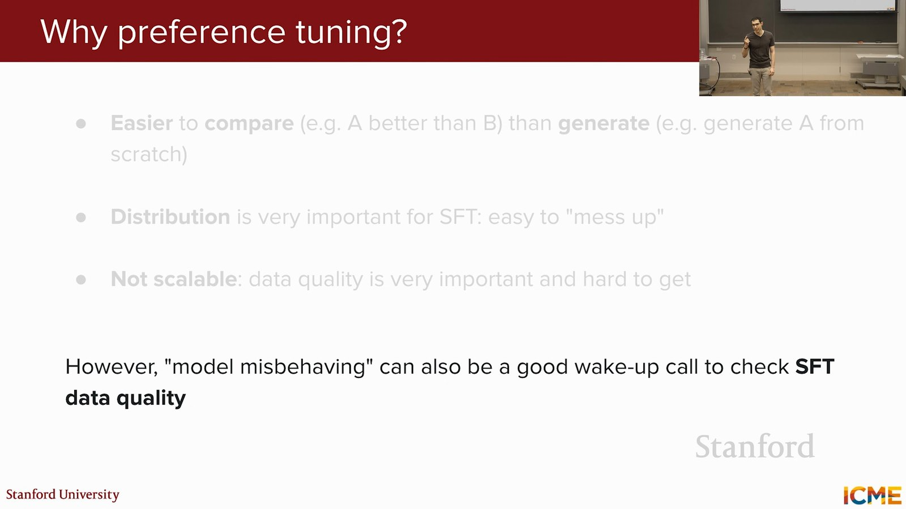
理由 1：比較は生成よりはるかに簡単
Afshine の説明はこうだ ― 「『素晴らしい詩をゼロから書け』と言われるのと、『悪い詩と良い詩を 2 つ見せるのでどちらが良いか言え』と言われるのでは、後者のほうが圧倒的に簡単」。 SFT のデータを作るには「理想の応答」そのものを人間が書かなければならないが、選好データなら 2 つ見て選ぶだけで済む。 アノテーションのコストと難易度が桁違いに下がる。
理由 2：SFT ではプロンプトの分布が極めて重要で、壊しやすい
SFT データセットを作るとき、実務家が最も神経を使うのが プロンプトの分布 である。 特定タイプのプロンプトが多すぎると、モデルはその方向に偏った応答をするようになる。 つまり「モデルが 1 件おかしな挙動をしたから SFT データに 1 件足そう」としても、 その 1 件がモデル全体をどれだけ偏らせるかを慎重に見極めなければならない。preference tuning にはこの制約が（相対的に）ない。
理由 3：SFT データの品質確保はスケールしない
SFT データは非常に高品質でなければならない。モデルのあらゆる失敗を拾って SFT データに落とし込もうとすると、 時間がかかりすぎて回らなくなる。「ただ大変なだけになる」と Afshine は言う。
講義で明示された重要な但し書き。 「preference tuning はすべての答えではない。モデルが盛大に misbehave しているなら、それは SFT データセット自体に問題がある可能性もある。 そういうときは preference tuning に走る前に SFT データを点検したほうがよいこともある」。 スライド最下部の一文（“However, "model misbehaving" can also be a good wake-up call to check SFT data quality”）はこれを指している。
周辺情報：LoRA との関係（受講生の質問より）。
「SFT には LoRA があったが、preference tuning における LoRA 相当は何か？」という質問に対する Afshine の整理が明快だった。
LoRA は「チューニングするパラメータ数を減らす方法」、preference tuning は「目的関数（損失）が違う話」であり、両者は直交する概念。
つまり DPO を LoRA で回す、といった組み合わせは普通に可能で、両者は互いに排他ではない。
実際 Hugging Face TRL の DPOTrainer は PEFT（LoRA など）と併用する構成を公式にサポートしている。
4. 選好データの 3 形式 ― pointwise / pairwise / listwise
1 件の観測は Observation = (prompt x, response ŷ) と定義される。この観測に「良し悪し」のラベルを付ける方式は 3 通りある。
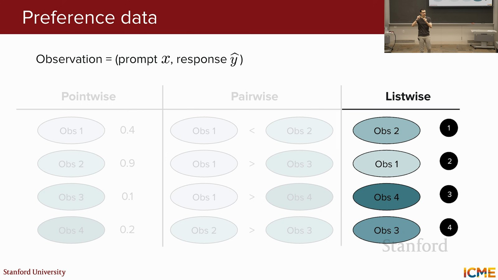
Obs 1 < Obs 2 のような 2 件比較、Listwise は 4 件に 1〜4 の順位を付ける（この時点では Listwise 列だけが強調表示されている）。13:12| 形式 | ラベルの付け方 | 人間にとっての難易度 | 講義の評価 |
|---|---|---|---|
| Pointwise | 1 件ごとに絶対スコア（例: 0.9） | 最も難しい | 「これは 0.9、これは 0.2、とスケールをどう決めるのかが全く明確でない」 |
| Pairwise | 2 件を並べてどちらが良いかを指定 | 最も易しい | 実務で標準的に使われる。以降の講義もこれで進む |
| Listwise | n 件をまとめて順位付け | 中間 | 「どれだけ良いか」を言わなくてよい分 pointwise より楽だが、なお少し複雑 |
周辺情報：なぜ絶対評価が難しいのか。
絶対スコア付けは、評価者ごとに基準（スケール）がずれるうえ、同じ評価者でも時間帯や直前に見た事例で基準が移動する。
相対比較はこの「基準のドリフト」に強い。これは情報検索の learning-to-rank 分野で古くから知られる pointwise / pairwise / listwise の分類とまったく同じ整理で、
LLM の選好データ収集にもそのまま持ち込まれている。
なお実運用の選好データセット（例: Hugging Face TRL が例示に使う UltraFeedback や、
Chatbot Arena 由来の lmarena-ai/arena-human-preference-55k）も、いずれも chosen / rejected の ペア形式で配布されている。
5. ペア選好データの作り方 ― 2 ステップのレシピ
では実際にペア選好データはどう作るのか。スライドは 2 ステップのレシピとして提示する。
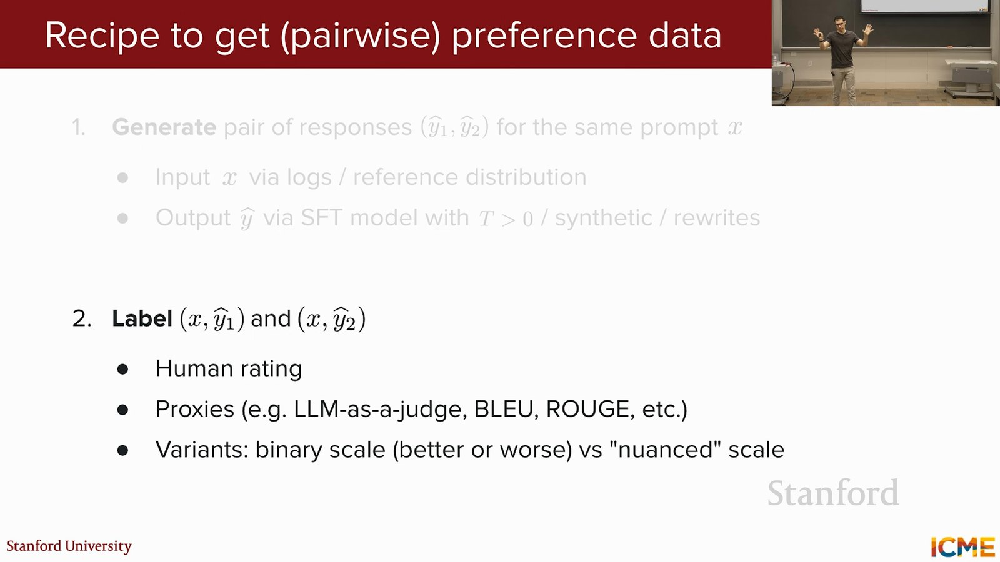
0 で／合成／書き直し）、2. Label（Human rating、Proxies として LLM-as-a-judge・BLEU・ROUGE、binary スケール vs nuanced スケール）" loading="lazy" />T > 0 の SFT モデル・合成・書き直しで得る。ステップ 2「Label」は human rating か proxy（LLM-as-a-judge、BLEU、ROUGE 等）で、binary スケールか nuanced スケールを選ぶ。15:10ステップ 1：同じプロンプトに対して応答を 2 つ生成する
- 入力（プロンプト x）：実ユーザーが典型的に何を尋ねるかの分布に従わせたいため、プロダクションのログ、あるいは意図的に用意した参照分布から取る。
- 出力（応答 ŷ）：同じプロンプトを temperature を正にした SFT モデルに 2 回入れると、異なる 2 つの応答が得られる（Lecture 3 の decoding の話につながる）。ほかに合成データ、あるいは rewrite（書き直し） という手もある。
rewrite とは、ログの中から「気に入らなかった応答」を見つけ、それを人手で良い応答に書き直すやり方。 まさに §2 の teddy bear の例がこれである。ただし Afshine は 「生成が必要な分、少し手間が増える」と注記している ― §3 で述べた「比較のほうが生成より楽」という原則の裏返しだ。
ステップ 2：2 つの応答にラベルを付ける
- human rating：人間の評価者による比較。RLHF の "HF" はここに由来する。
- proxy（代理指標）：LLM-as-a-judge（後の講義で扱う予定）、あるいは BLEU・ROUGE のようなルールベース指標。ただし後者について Afshine は 「最近はあまり使われていない」と述べている。
- スケールの粒度：最も単純なのは binary（応答 1 は応答 2 より良いか悪いか、だけ）。より細かい nuanced スケール（much better / better / slightly better / slightly worse / worse / much worse）も可能。ただし多くのタスクは主観的なので、実際には binary が選ばれることが多い。
周辺情報：BLEU と ROUGE とは何か。 いずれも生成文と参照文の n-gram の重なりで自動採点する古典的指標。BLEU は機械翻訳向けで適合率（precision）寄り、ROUGE は要約向けで再現率（recall）寄りという違いがある。 参照文との表層一致しか見ないため、意味は同じでも言い回しが違う応答を低く評価してしまう。 オープンエンドなチャット応答の「好ましさ」を測るには不向きで、講義が「最近はあまり使われない」と言うのはこの理由による。 代わりに主流になったのが LLM-as-a-judge（強力な LLM に 2 応答を比較採点させる）である。
講義で強調された落とし穴：ガイドラインの質。 Afshine は「人間の評価は、提示するガイドラインに非常に敏感だ」と釘を刺している。 「ガイドラインをできるだけ客観的にすることが重要。完全に客観的にはできないこともあるが、少なくとも十分に明確にしておかないと、 人間の選好データがノイズだらけになる」。選好データの品質は、モデルではなく評価設計で決まる部分が大きい。
6. 強化学習（RL）の基礎 ― LLM に写像して理解する
選好データが揃ったら、次は「好まれた応答を出しやすく、好まれなかった応答を出しにくく」モデルを更新したい。 そのための手法が RLHF であり、その名のとおり RL に依存する。 Afshine は教室に 「ここに RL の専門家はいますか？」と尋ね、ほぼ誰もいないことを確認したうえで、基礎から丁寧に始めた。
標準的な RL の枠組み
- agent（エージェント）が environment（環境）と相互作用する。
- agent は時刻
tにある state（状態）stにいて、action（行動）atを取る。 - どの action を取るかは policy（方策）
πθ(at | st)に従う。これは「その状態で、その行動を取る確率」を与える関数。 - action の結果として agent は reward（報酬）
rtを受け取る。良いこともあれば悪いこともある。
これを LLM に対応させる
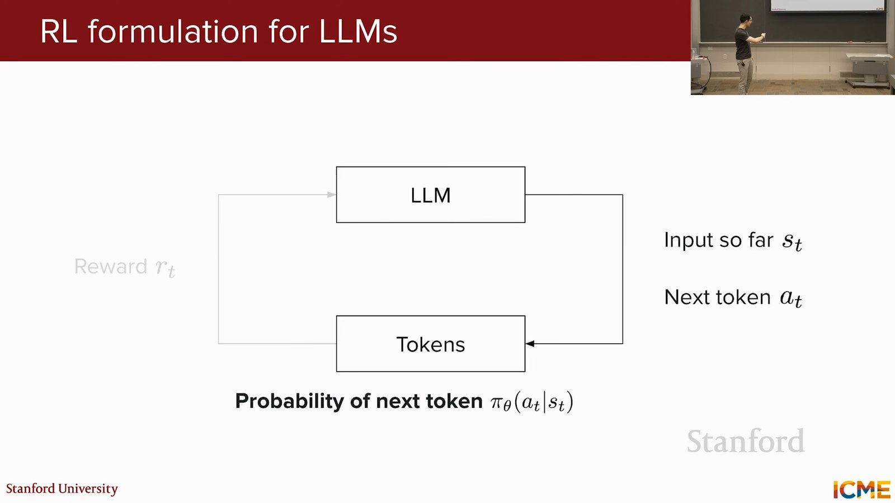
st = Input so far（ここまでの入力）、action at = Next token、policy = Probability of next token πθ(at|st)。左端の Reward rt はこの時点ではまだ淡色。21:30| RL の用語 | LLM での対応物 | 補足 |
|---|---|---|
| agent | LLM そのもの | 学習対象 |
state st | ここまでの入力（プロンプト＋生成済み token 列） | 文脈が状態 |
action at | 次に予測する token | 1 手 = 1 token |
| environment | 語彙（token の集合） | 選べる行動の集合 |
policy πθ | forward pass の出力である次 token の確率分布 | LLM の出力そのものが policy |
reward rt | 選好データから学習した reward model のスコア | 次章で構築する |
ここが本講義でいちばん腑に落ちるポイントだろう。
「LLM を RL で学習する」と聞くと大掛かりに聞こえるが、要するに
LLM が出力する確率分布をそのまま policy とみなすだけの話である。
目標は 「θ（LLM のパラメータ）を学習して、πθ が人間の選好に整合するようにすること」 ― スライドの一文がすべてを言っている。
= ここまでの入力"] --> P["policy π_θ(a_t | s_t)
= LLM の出力確率分布"] P --> A["action a_t
= 次の token"] A --> E["environment
= 語彙 (tokens)"] E --> S A --> R["reward r_t
= reward model のスコア"] R -.->|θ を更新| P
クリックで拡大。LLM における RL ループ（講義スライドの構成を図式化したもの）。
周辺情報：講義で語られた「RL 信号の疎さ」。 受講生から「この報酬は LLM を変えられるほど強い信号なのか」という質問が出た。Afshine の答えは率直だった ― 「SFT では常に部分入力を与えて次 token の生成を学習させるので信号が濃い。だがここでは 1 completion あたりおよそ 1 つの信号しか得られない。 だから RLHF は sparse signal のアプローチだと見なされている」。 別の受講生の「報酬は token ごとに与えるのか、全体に対してか」という質問にも 「全体に対して」と即答している。 この「completion 単位でしか報酬が来ない」という性質が、後述する value function（token 単位の推定器）が必要になる直接の理由になる。
7. RLHF の全体像 ― 2 つのステップ
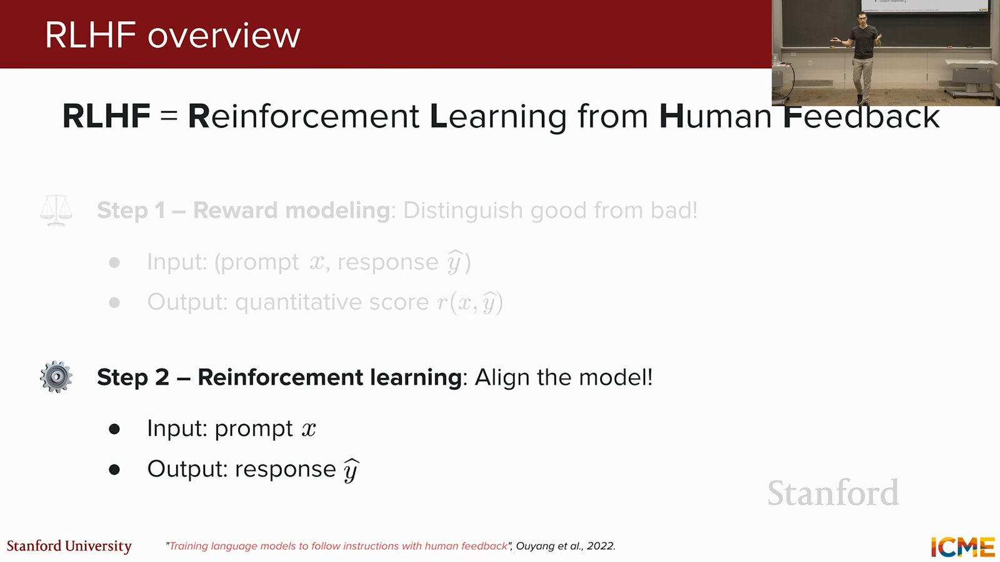
x, response ŷ)、出力 = 定量スコア r(x, ŷ)）と Step 2 – Reinforcement learning（モデルを整合させる。入力 = prompt x、出力 = response ŷ）。出典は Ouyang et al., 2022。27:31Step 1 — Reward modeling
集めた選好ペアを使い、「良い出力」と「悪い出力」を見分けるモデルを学習する。入力はプロンプトと応答の連結、出力はスコア 1 つ。
Step 2 — Reinforcement learning
その reward を使い、LLM（policy）を選好に整合するよう更新する。入力はプロンプト、出力は reward の高い応答。
"HF" が指しているもの。 Afshine が明示的に注意を促した点 ― 「RLHF の Human Feedback の部分は、reward model を訓練するラベルを指している。 選好ペアが人間の評価に基づくなら人間の選好に依拠していることになり、RLHF である」。 逆にラベルが人間由来でない場合は RLAIF（Reinforcement Learning from AI Feedback）と呼ばれる、と講義でも言及があった。
周辺情報：RLAIF の代表例。 人間ラベルの代わりに AI がフィードバックを与える方式として広く知られるのが Anthropic の Constitutional AI で、 あらかじめ定めた原則（"constitution"）に照らして AI 自身が応答を批評・修正し、その選好ラベルで学習する。 人間アノテーションのコストとスケール制約を外せる一方、フィードバックを与えるモデルの偏りがそのまま継承されるというトレードオフがある。 RLHF / RLAIF のどちらであっても、以降の Step 1・Step 2 の数式的な枠組みはまったく同じである。
8. Step 1：reward model と Bradley-Terry 定式化
Step 1 の目標は、プロンプトと応答を入れるとスコアが 1 つ返る関数 r(x, ŷ) を作ること。
応答だけでなくプロンプトも入力に含めるのが重要で、文脈がなければ答えの良し悪しは判定できない。
では、そんなモデルをどう学習するのか。ここで登場するのが Bradley-Terry 定式化 である。 Afshine は 「これは重要な式なので、少しここに留まります」と言って時間をかけた。
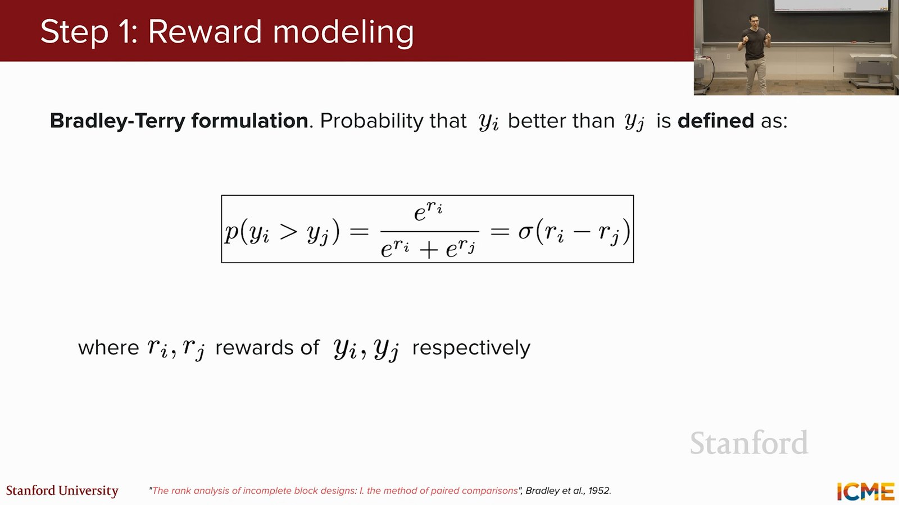
y_j) = e^{r_i} / (e^{r_i} + e^{r_j}) = σ(r_i − r_j) が枠囲みで表示されている" loading="lazy" />p(yi > yj) = eri / (eri + erj) = σ(ri − rj)。脚注は原典の Bradley et al., 1952。30:05この式が言っていること
右辺の変形（= σ(ri − rj)）を見ると、直感が一気に働く。sigmoid は
入力が −∞ で 0、+∞ で 1 に漸近する S 字カーブである。したがって、
yiがyjより良いなら、確率を 1 に近づけたい →ri − rjをできるだけ大きくしたい。- つまり 良い出力の
rは高く、悪い出力のrは低くなるようモデルを学習すればよい。
絶対値ではなく差だけが意味を持つのがこの定式化の核心である。
周辺情報：Bradley-Terry モデルの出自。
スライドの脚注にあるとおり原典は 1952 年の統計学論文
“The rank analysis of incomplete block designs: I. the method of paired comparisons”（Bradley & Terry）。
LLM のために作られた式ではなく、「対戦・ペア比較の結果から各個体の強さを推定する」ための 70 年以上前の古典モデルである。
各個体に潜在的な強さ r を割り当て、勝敗確率をその差の logistic 関数で表す ― チェスの Elo レーティングと同系統の発想だ。
Hugging Face TRL の RewardTrainer 公式ドキュメントも、reward model の損失を
p(y⁺ ≻ y⁻ | x) = σ(r(x, y⁺) − r(x, y⁻)) という Bradley-Terry の形で明示しており、
講義の式がそのまま現代の実装に載っていることが確認できる。
周辺情報：sigmoid（logistic 関数）の基本。
σ(x) = 1 / (1 + e−x)。実数全体を (0, 1) に押し込むので確率として解釈できる。
σ(0) = 0.5、σ(−x) = 1 − σ(x)（原点対称）という性質があり、
Bradley-Terry では「差が 0 なら勝敗五分五分」という自然な意味に対応する。
また σ'(x) = σ(x)(1 − σ(x)) と微分が簡潔なため、勾配計算にも都合がよい。
なお 2 択なので softmax の 2 クラス版がちょうど sigmoid に一致する ―
講義中、受講生から「この σ は softmax ではないのか」という質問が出たが、
Afshine は「reward model はペアで学習しているので σ（ペアワイズ）だ」と整理している。
9. reward model の損失関数を第一原理から導出する
Afshine はここで スライドを離れて黒板に向かい、損失関数を「第一原理から」組み立てて見せた。 受講生から「binary cross entropy では？」という答えが出たあと、それを丁寧に展開していく。
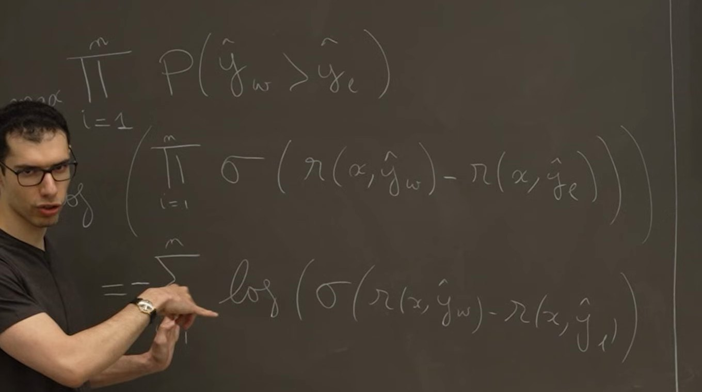
ŷ_l)、log(Π σ(r(x,ŷ_w) − r(x,ŷ_l)))、= −Σ log(σ(r(x,ŷ_w) − r(x,ŷ_l))) の3段" loading="lazy" />max Πi=1..n P(ŷw > ŷl) → log( Πi=1..n σ( r(x, ŷw) − r(x, ŷl) ) ) → = −Σ log( σ( r(x, ŷw) − r(x, ŷl) ) ) と 3 段で書き下されている。38:00導出の 5 ステップ
- データを置く。 選好データセットは「勝った例
ŷw」と「負けた例ŷl」のペアが n 組。各ペアは互いに独立と仮定する。 - 尤度を最大化する。 「観測されたデータが起きる確率」を最大にする θ を探す。独立なので積になる：
maxθ Πi=1..n P(ŷw > ŷl)。 - Bradley-Terry を代入する。
Πi=1..n σ( r(x, ŷw) − r(x, ŷl) )。 - log を取る。 Afshine の助言 ― 「確率の積を見たら、まず考えるべきは log。積は非常に小さくなり得て数値的な不安定さを招くから」。積の最大化は log の最大化と同値なので、
Σ log σ(·)になる。 - 符号を反転する。 「ML の人間は最小化が好きなので、頭にマイナスを付ける」。最大化 → 最小化に変換して損失関数が完成する。
この講義でいちばん美しい問い
導出後、Afshine が受講生に投げた質問が秀逸だった ― 「損失関数はペアワイズだ。では reward model 自体はペアワイズか、ポイントワイズか？」
教室からは「ペアワイズ」という答えが返ってきたが、正解は ポイントワイズ である。
そこが美しいところで、ペアは必要ないんです。学習はペアワイズにやるけれど、出来上がるのはポイントワイズなモデル。 最終的には、1 つのプロンプトと 1 つの出力を受け取って、数値を 1 つ返す reward model が手に入る。
学習時だけペアで縛り、推論時は 1 件ずつスコアリングできる ― この性質があるからこそ、後述する Best-of-N（N 個の候補を独立に採点して最良を選ぶ）が成立する。
周辺情報：これは「最尤推定（MLE）→ 負の対数尤度（NLL）」という王道の型。 この 5 ステップは reward model 固有のものではなく、統計・機械学習で最も標準的な損失関数の作り方そのものである。 「データの生成モデルを仮定 → 尤度を書く → 対数を取る → 符号を反転して損失にする」。 Bradley-Terry の確率は 2 値なので、出来上がる損失は binary cross-entropy の特殊形になる （受講生の最初の答えは正しかった）。Afshine 自身も 「cross entropy はこれの特殊ケースと見なせる」と応じている。
10. reward model の実装 ― 規模・アーキテクチャ・評価
アーキテクチャの選択肢
| 方式 | 構成 | 講義の評価 |
|---|---|---|
| Decoder-only LLM + 分類ヘッド | next token prediction ヘッドの代わりに classification head を付け、文末の表現からスコアを出す | 「最近はみんな LLM ルート。何もかも LLM だから」＝事実上の標準 |
| Encoder-only（BERT 系） | [CLS] token の埋め込みを射影してスコアにする |
「選択肢としては十分あり得る」（Lecture 2 の内容とつながる） |
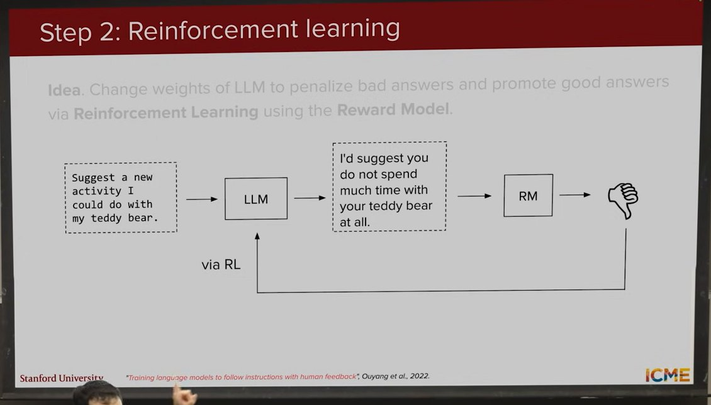
via RL で LLM の重みを更新、と一周する。47:50講義中の Q&A で明らかになった細部
- reward は「次元」ごとに定義される。 有用性・フレンドリーさ・安全性などは別々の軸であり、次元ごとに別の reward model を持つこともできるし、全体を束ねた holistic なスコアを使うこともできる。まず「何を測る軸か」を定義する必要がある。
- 回帰か分類か。 Afshine の答えは「どちらとも言い切れないが、選好データ（良いか悪いか＝1 か 0）から学ぶので分類寄り。ただし最終的に reward を使うので純粋な分類でもない。確率的な定式化と呼ぶのが一番近い」。
- スケールは自由（free form）。 回帰のように「0〜1 のスコアを当てる」わけではないので出力スケールは決まっておらず、推論時にバッチ内で正規化するのが普通。後述の Best-of-N ではスケールは影響しない（順位が変わらないため）が、損失関数に入る RL ではスケールが効くので正規化が重要になる。
- スコアの見え方。 「良い出力は 1、悪い出力は −2、−3 くらい」と Afshine は説明した。連続値で、負にもなる（Best-of-N のスライドで実例が出てくる）。
周辺情報：RewardBench。 講義は「reward model の良し悪しを測るベンチマークも登場している」として RewardBench（Lambert et al., 2024）を参照として挙げた。 これは chat / reasoning / safety にまたがる prompt–chosen–rejected の三つ組のデータセットとコードベースで、 「なぜ一方の答えが好ましいのか」が検証可能な理由（バグ、事実誤り等）で説明できるよう設計されている点が特徴。 分類器を直接 MLE 学習した reward model だけでなく、DPO による暗黙の reward modelも同じ土俵で評価できる。 論文は、reward model が「拒否しがちになる傾向」「推論の限界」「指示追従の弱さ」を持つことを報告している。
11. Step 2：RL で LLM を整合させる ― と reward hacking
reward model ができたら Step 2。学習するのは LLM（policy）だけで、reward model は凍結（frozen）される ―
Afshine が「重要な点」として繰り返した部分である。スライドでも 🔥 Trained（LLM）と ❄ Frozen（RM）が明示されている。
周辺情報：この桁数はどこから来ているか。
スライドの脚注は一貫して InstructGPT 論文（Ouyang et al., 2022）を挙げている。同論文の実際のプロンプト数は
SFT が約 13,000、reward model が約 33,000、PPO（RL）が約 31,000（いずれも train split）で、
reward model の O(10,000) は素直に一致する。
一方 RL 段階の O(100,000) は「プロンプト数」ではなく、RL では 1 プロンプトから複数の rollout を生成するため
観測（completion）数として桁が上がることを織り込んだ一般的な目安として読むのが安全である。
いずれにせよ講義の主張は「RL 段階のほうが reward model 段階より 1 桁多いデータを使う」という相対関係にある。
目的関数は 2 項からなる
スライドの一文が目的関数の全体像を要約している ― 「Objective function optimizes for higher rewards without going too far from the base model（reward を最大化するが、ベースモデルから離れすぎない）」。
Afshine は「前半は誰でも納得するはず。では、なぜ後半が必要なのか？」と教室に問いかけ、3 つの理由を引き出した。
① 破滅的忘却（catastrophic forgetting）
pretraining と SFT で獲得した膨大な知識が、RL で引き離されると失われてしまう。受講生の最初の回答で、Afshine は「まさにそれ」と全面同意した。
② reward hacking
reward model は不完全なので、その不完全な指標に過剰最適化すると、reward は上がるが本来の目的は達成されない。
③ 学習の不安定性
更新が大きすぎると学習が発散する。RL は元来不安定になりやすい。
reward hacking ― 講義中いちばん記憶に残る例え
Afshine が自分自身を題材にして説明した例が秀逸だった。
私が講義をしているとしましょう。目的は「できるだけ情報量の多い講義にすること」です。 そこで、それを定量化するために 「講義の最後の拍手の大きさ」を reward に選んだとする。 問題は、拍手の音量に過剰最適化すると起きる。皆さんがジョークを好きだと分かったので、ジョークばかり言い始める。 すると最後に拍手が起きて reward は最大化される。けれど本来の目的 ―「情報量の多い講義」― は達成されていない。
reward hacking とは、不完全な指標に過剰最適化してしまい、reward は最大化されるのに本来の目的は満たされない現象である。 受講生の言葉を借りれば「きれいでないデータに overfit してしまう」ことでもあり、Afshine は両者は同じ話だと整理した。
周辺情報：これは古典的な Goodhart の法則。 「測定基準が目標になると、それは良い測定基準でなくなる（When a measure becomes a target, it ceases to be a good measure）」。 AI 安全性の文脈では specification gaming（仕様の抜け穴を突く挙動）とも呼ばれ、 「掃除ロボットがゴミを見つけないように目を閉じる」といった事例が有名である。 LLM の RLHF で実際に観測される reward hacking の典型は 冗長性バイアス（長く書くほど reward model が高評価しやすい）や 過剰な追従（sycophancy：ユーザーに同調しすぎる）で、 いずれも「reward model が学習データから拾った偏りを policy が突く」形で現れる。 後述の KL ペナルティは、この暴走に対する最も基本的な歯止めという位置づけになる。
KL divergence ― 「離れすぎない」を数式にする
Afshine は 「KL divergence の話をしますが、皆さんが知っている前提にはしたくない」と言って定義から始めた。
重要な注意として Afshine は 「距離（distance）とは呼びたくない。距離には多くの含意があるが、これは距離ではない」と強調した。 あくまで「どれだけ離れているかの measure（尺度）」である。
さらに教室に「KL divergence は正か負か？」と問い、正（非負）であることを引き出したうえで、「なぜ？」と踏み込んだ。
答えは Jensen の不等式。式の中の log は正にも負にもなり得るので一見自明ではないが、Jensen の不等式で常に 0 以上であることが示せる。
そして KL = 0 となるのは P と Q が等しいとき、かつそのときに限る。
周辺情報：なぜ「距離ではない」のか。
KL divergence は非対称（KL(P‖Q) ≠ KL(Q‖P)）であり、三角不等式も満たさない。
数学的な意味での距離（距離空間の公理）を満たさないので、正確には「ダイバージェンス（乖離度）」と呼ぶ。
実装上も向きの選択は重要で、Hugging Face TRL の PPOTrainer は学習中の指標として
objective/kl（現在の policy と reference policy の平均 KL）を記録し、
objective/non_score_reward = beta * kl、objective/rlhf_reward = score − non_score_reward という形で
reward から KL ペナルティを差し引いた値を最終的な最適化対象として追跡している。
講義の目的関数がそのまま実装のログ項目になっている、と見ると分かりやすい。
12. reward ではなく advantage を最大化する ― value function と GAE
ここで Afshine は 「実はひとつ嘘をついていました」と切り出す。
PPO が最大化するのは reward そのものではなく、advantage（アドバンテージ）である。
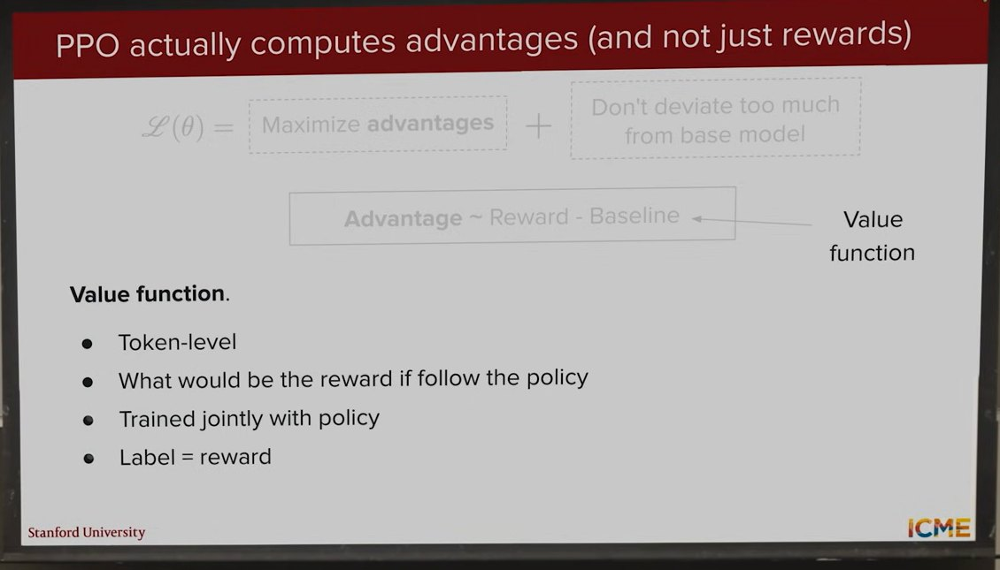
Advantage ~ Reward − Baseline と示され、その Baseline が Value function であること、value function は token-level／policy に従った場合の reward の推定／policy と同時に学習／ラベル = reward の 4 点が列挙されている。1:00:40advantage とは何か
Afshine の言葉では 「advantage は、あなたの出力が期待していたものと比べてどれだけ良いか、と考えればよい」。 絶対的な reward ではなく相対的な良さを見ることで、学習が安定する。
なぜ安定するのか。Afshine は明確に述べている ― 「この reward − baseline を使うのは、推定量の分散を減らすから。そして単純に学習が速くなるから」。
value function ― baseline を推定する関数
では baseline はどう求めるのか。それが value function である。Afshine は「意味が詰まっているので繰り返します」と言って 2 回説明した。
value function は reward の token レベルの推定であり、部分的な入力を受け取って reward を予測する。 つまり、そこから policy に従って生成を続けた場合に得られるであろう reward を予測する。
ここが reward model との決定的な違いである。
| reward model | value function | |
|---|---|---|
| 粒度 | completion 単位（応答全体） | token 単位 |
| 入力 | プロンプト＋完成した応答 | プロンプト＋途中までの生成 |
| 出力 | その応答の良さ | ここから policy に従って続けた場合の予想 reward |
| 学習 | Step 1 で事前に学習し、Step 2 では凍結 | policy と同時に学習（ラベルは reward） |
| タスク種別 | （確率的定式化・分類寄り） | 回帰 |
実装としては、SFT モデルで初期化した LLM に「value head」を追加し、policy と一緒に学習する。 Afshine の説明では 「今度は分類問題ではなく回帰問題。policy に従って生成を続けた場合の最終的な reward を推定する」。
GAE ― 講義では意図的に踏み込まなかった部分
advantage の具体的な計算式について、Afshine ははっきりと線を引いた ― 「advantage が正確にどう定式化されるかは、意図的に深入りしません。この授業の範囲を超えています」。 そのうえで参考文献として挙げたのが、GAE（Generalized Advantage Estimation）の論文である。
周辺情報：GAE 論文とは。 “High-Dimensional Continuous Control Using Generalized Advantage Estimation”（Schulman et al., 2015／arXiv:1506.02438）。 著者の John Schulman は PPO 論文（2017）と同じ人物で、PPO は GAE と組み合わせて使うのが標準的な構成になっている。 論文の要点は、policy gradient 法の 2 大課題 ―「必要サンプル数が膨大」「学習が安定しない」― のうち前者に対し、 value function を使って policy gradient 推定の分散を大幅に削減する（多少のバイアスと引き換えに）というもので、 TD(λ) と類似した指数重み付きの advantage 推定量を提案している。 講義が「大きなハイパーパラメータ付きの複雑な式」と述べたのはこの λ（バイアス–分散のトレードオフを調整）と割引率 γ を指す。 後段の「ハイパーパラメータが多すぎる」という課題の一因でもある。
13. PPO ― Proximal Policy Optimization
以上を踏まえて、実際のアルゴリズムに入る。PPO = Proximal Policy Optimization。 「proximal（近接）と名付けられているのは、まさにベースモデルから離れすぎたくないから」と Afshine が説明したとおり、 名前そのものが目的関数の第 2 項を表している。
変種 1：PPO-Clip
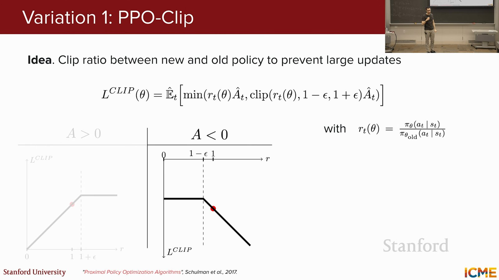
0（淡色）と A<0（強調）の2つのグラフ、r_t(θ) = π_θ(a_t|s_t)/π_θold(a_t|s_t) の定義" loading="lazy" />LCLIP(θ) = Êt[ min( rt(θ)Ât, clip(rt(θ), 1−ε, 1+ε)Ât ) ] と、比 rt(θ) = πθ(at|st) / πθold(at|st)。左が A > 0（1+ε で頭打ちになる折れ線）、右が A < 0（1−ε から下降する折れ線）。1:08:30Afshine が「自分も混乱した」と明かした 2 つの罠。スライドにも “Terminology.” として明記されている。
- 罠 1：
Lと書いてあるが loss ではない。 「L =と書かれているが、これは最小化したいものではなく最大化したいもの。人は L を loss の意味で使うが、ここでは最大化する」。 - 罠 2：
rは reward ではない。 「普通 r は reward を指すが、ここでは違う。現在の policy と 1 つ前のステップの policy の確率の比」。しかも 「old」は SFT モデルではなく、RL 段階の 1 イテレーション前のモデル。
グラフの読み方 ― 直感で理解する
複雑に見える式も、advantage の符号で場合分けすると素直に読める。
| advantage の符号 | 意味 | やりたいこと | clip の役割 |
|---|---|---|---|
| A > 0（正） | 生成したものは強化したい出力 | その出力の確率を上げたい → r を大きくしたい（L = r × A は r の線形関数） |
1 + ε で頭打ちにして上げすぎを防ぐ |
| A < 0（負） | 生成したものは抑制したい出力 | その出力の確率を下げたい → r を小さくしたい（r を下げると L が増える） | 1 − ε で下限を作り下げすぎを防ぐ |
Afshine のまとめ ― 「この超複雑に見える式は、要するにこう説明できる。advantage が正なら、その出力を生成することを強化したい（reward model が気に入ったのだから）。 でも更新しすぎたくない。だから clip がある。advantage が 0 未満なら、その出力が起きる確率を下げたい。 だから r は小さくしたいが、小さくしすぎたくもない ― やはり大きすぎる更新をしないため」。
受講生の鋭い質問。「なぜベースモデルではなく1 つ前のイテレーションを使うのか？」 Afshine の答え ― 「ベースモデルから離れすぎないようにしたいだけでなく、イテレーション間の更新も極端にならないようにしたいから。学習の安定性を上げるための追加の制約」。 「では base model は考慮しないのか？」という続きの質問には 「この定式化では考慮していない。でも LLM ベースの RL で普通に使う定式化では考慮する。どうやるかはこれから見る」と応じ、次の KL penalty へ橋を渡した。
変種 2：PPO-KL Penalty
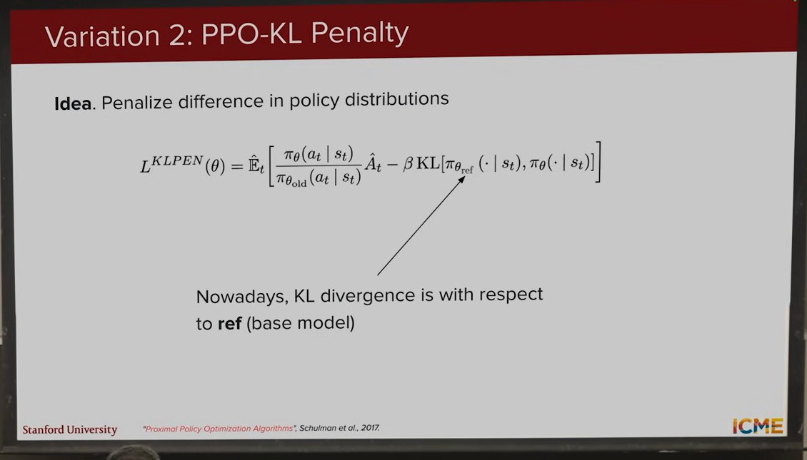
LKLPEN(θ) = Êt[ (πθ(at|st) / πθold(at|st)) Ât − β KL[πθref(·|st), πθ(·|st)] ]。矢印付きの注記に 「Nowadays, KL divergence is with respect to ref (base model)」とある。1:13:20
こちらは「比 × advantage」から KL divergence を β 倍して引く形。clip の代わりにペナルティ項で抑える。
用語の整理（スライドに明記）。
old= 前回の RL イテレーションのモデルref= ベースモデル（SFT モデル）
そして Shervine・Afshine 双方が強調したのは、2017 年の PPO 原論文では KL を old に対して取っていたが、
2025 年の LLM 文脈では ref（ベースモデル）に対して取るのが普通という点。
「この論文は 2017 年に出て、LLM は 2020 年代に普及したものなので、そこに入れるものが変わってきた」。
さらに実務上の注記として ― 「最近 PPO で policy を学習する人は、たいてい KL divergence を使い、それを old イテレーションを使う clipping と混ぜることもある。 損失の定式化には多くのバリエーションがあり、私が言ったことが常に正しいわけではない」。 つまり 実装は「clip か KL か」ではなく「clip も KL も」が現実ということである。
周辺情報：PPO の系譜と実装のデフォルト値。
PPO は同じ Schulman らの TRPO（Trust Region Policy Optimization）の後継で、
原論文（arXiv:1707.06347）は「TRPO の利点を持ちつつ、実装がはるかに単純で汎用的、経験的にサンプル効率も良い」と位置づけている。
「1 サンプルにつき 1 回の勾配更新」しかできない従来の policy gradient に対し、
同じデータで複数エポックのミニバッチ更新を回せるようにしたのが PPO の実務的な貢献である。
なお clip の範囲 ε は実装上 0.2 が事実上の標準で、Hugging Face TRL の PPOTrainer も
--cliprange 0.2 を既定とし、「val/ratio は 1.0 付近を漂うはず。2.0 や 0.1 のように極端なら、連続する policy 間の更新が急すぎる」という
デバッグの目安を公式ドキュメントに明記している。講義の rt(θ) がそのまま監視指標になっているわけだ。
14. PPO の 4 モデル問題と後継アルゴリズム
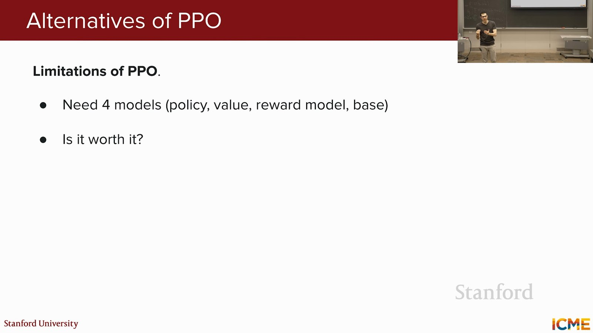
| モデル | 役割 | 状態 |
|---|---|---|
| policy | 学習対象の LLM | 🔥 学習中 |
| value | advantage 推定のための baseline を出す | 🔥 policy と同時に学習 |
| reward model | completion にスコアを付ける | ❄ 凍結 |
| base（reference） | SFT モデル。KL の比較対象 | ❄ 凍結 |
🔥 学習対象（LLM）"] POL --> C["completion ŷ
（rollout）"] C --> RM["reward model
❄ 凍結"] RM --> RW["reward r(x, ŷ)"] C --> VF["value function V
🔥 policy と同時学習"] VF --> BL["baseline"] RW --> ADV["advantage Â
≈ reward − baseline
（GAE で推定）"] BL --> ADV POL --> KLD["KL divergence"] REF["base / reference model
❄ 凍結（SFT モデル）"] --> KLD ADV --> LOSS["PPO 目的関数
advantage 最大化 − β·KL"] KLD --> LOSS LOSS -.->|θ を更新| POL
クリックで拡大。PPO ベース RLHF が必要とする 4 つのモデルと、その関係。
「本当にこれ全部いるのか？」
Afshine の問いかけ ― 「性能を出すのに、本当にこれら全部のモデルが必要なのか？ 答えはたぶん必要ない、かもしれないが、必要ないかもしれない」。 この問題意識が、以降の Best-of-N と DPO、そして次回の GRPO へとつながっていく。
スライドが挙げる代替手法は REINFORCE、GRPO、そして「…and many more!」。
次回予告。 「reasoning モデルの文脈で GRPO を聞いたことがあるかもしれません。GRPO は来週の Lecture 6 で詳しく見ます」。 先取りしたい人向けに挙げられた論文が “DeepSeekMath: Pushing the Limits of Mathematical Reasoning in Open Language Models”（Shao et al., 2024）である。
周辺情報：GRPO が「4 モデル問題」をどう解くか。
DeepSeekMath 論文のアブストラクトは GRPO（Group Relative Policy Optimization）を
「PPO の変種で、数学的推論能力を高めつつ PPO のメモリ使用量を最適化する」と説明している。
鍵は value function（critic）を捨てる点にある。
PPO は baseline を value model で推定していたが、GRPO は同じプロンプトから複数の応答をグループとして生成し、
そのグループ内の reward の相対値（平均・標準偏差で正規化）を advantage として使う。
これにより学習対象・保持対象のモデルが 1 つ減り、講義が挙げた「4 モデル」の一角が消える。
この「グループ内の相対比較で baseline を代用する」発想は、§12 の Advantage ≈ Reward − Baseline の直系の応用である。
15. RL ベース手法の 6 つの課題
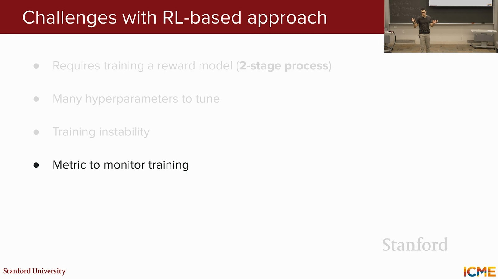
| # | 課題 | 講義での説明 |
|---|---|---|
| 1 | reward model の学習が必要（2 段階プロセス） | Step 1 → Step 2 と進んだ後に「Step 1 に問題があった」と気づくと、全部やり直しになる。依存関係が人生を難しくする。 |
| 2 | ハイパーパラメータが多い | KL の β、PPO-Clip の ε、GAE に少なくとも 2 つ ― 「とにかく色々ある」。うまくいく設定とそうでない設定があり、再学習が必要になればまた全部やり直し。 |
| 3 | 学習の不安定性 | イテレーションの幅を制約してもそれだけでは足りないことがある。 |
| 4 | 監視すべき指標がない | 使えるのは平均 reward くらい。しかし pretraining や SFT の cross entropy loss のように「望む振る舞いをどれだけ再現できているか」を直接語ってくれる指標ではない。 |
| 5 | completion の多様性（exploration）が必要 | RL の学習ループで毎回似た出力しか生成しないと、可能な completion 空間を探索できていない。何が良いかを知るには、モデルに探索を強制する必要がある。 |
| 6 | そもそも RL が必須なのか不明瞭 | スライドの表現は “Not abundantly clear why preference tuning absolutely needs RL”。Afshine 自身 「私も RL に馴染みがなかったし、この段階になぜ RL が必要なのか、そこまで明白ではない」と率直に述べた。 |
on-policy と off-policy
課題 5・6 に関連して、Afshine は 「RL ベースの学習でよく耳にする on-policy という語」の意味を明確にした。
| on-policy | off-policy | |
|---|---|---|
| 定義 | 学習中のモデルが現在の policy から生成し、それに対して最適化する | 学習対象のモデルが生成したものではないデータに依拠する |
| 該当例 | PPO は on-policy アルゴリズム | SFT（自分が生成したものでないデータを使う） |
| RLHF での意味 | 毎イテレーションでモデルに出力を生成させ、その良し悪しでモデルを更新する | — |
「SFT では、こちらが用意したプロンプトと応答をモデルに真似させていた。だがここでは、各イテレーションでモデル自身に出力を生成させ、 その出力の良さを使ってモデルを更新する。ここに本質的な違いがある」。
「なぜ選好データで SFT をしないのか？」という受講生の質問に対する Afshine の答えは、§2 の議論に戻る ― 「SFT は『この入力にはこれを生成せよ』と教えるだけで、生成すべきでないものについては何も教えない。 起きてほしくない出力があっても、それを完璧な文に書き直さない限り、伝統的な SFT の枠組みでは『それを生成するな』と伝える方法がない」。 そのうえで 「素晴らしい振りです。10 分後に、RL でやったことを教師ありでやる方法を見ます」と DPO を予告した。
16. Best-of-N（BoN）― RL をやらずに reward model だけ使う
「reward model は持っているが RL はやりたくない」人のための方法が Best-of-N である。 「なぜ RL をやりたくないか？ 高いから。モデルがたくさん必要だから」。
戦略（スライドより）。
- プロンプトを与え、SFT モデルで複数の出力を生成する（SFT モデルは学習しない。そのまま使う）。
- 各出力を reward model のスコアでランク付けする。
- 最良のものを返す。
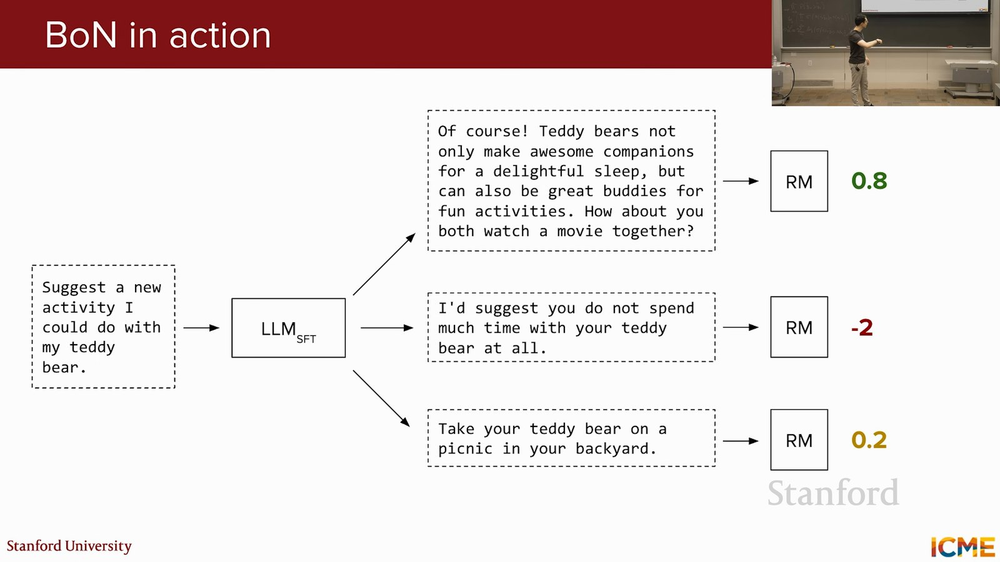
講義ではこのあと 3 件に順位（1 位: 0.8、2 位: 0.2、3 位: −2）が付き、最上位の 1 件だけがユーザーに返される。 §9 で確認した「reward model はポイントワイズ」という性質が、ここで実際に効いている。
BoN の弱点 ― 学習コストを推論コストに付け替えただけ
Afshine は「この方法の問題は何か？」と教室に問い、2 つの答えを引き出した。
- モデル自体が悪ければ結果も悪い。 ただし十分な数を十分高い temperature で生成すれば多様性は確保できるので、ある程度は緩和できる。「全部の応答が悪かったら？」という追い打ちの質問には 「これは確かに懸念。モデルは最低限それなりに良くないといけない」と認めている。
- 推論時に何度もモデルを叩く。 これが本命の問題。「RL の学習はスキップできるが、その仕事を全部推論段階に押し付けている。すべてが極めて高コストになる」。
だから Afshine は実務的な助言をする ― 「この道を選ぶ前に、推論トラフィックの見積もりと学習コストを比べて判断するとよい」。 大量のトラフィックを捌く必要がある場合、コストの観点から BoN は成立しないことがある。
Shervine の追撃：「無限の予算があっても解決しない」
DPO パートを引き継いだ Shervine は、BoN の弱点をもう一段深く掘り下げた。
思考実験として、無限のお金があったらどうでしょう。全部を並列に生成するとしても、 結果を返すには「最も遅い 1 本の生成が終わるまで」待たねばならない。 レイテンシの分布を見ると、たいてい 1 点に集中した形ではない。そして N 個の答えの最大値の確率分布は、右にシフトする。 つまり無限の金と計算資源があっても、1 回のパスより待たされる。
これは コストの問題ではなくレイテンシの構造的な問題で、金銭では解決できない。BoN が万能薬になれない理由である。
周辺情報：スケールに関する Q&A の要点。 「reward のスケールに制約はあるか」という質問に Afshine はこう答えた ― 「BoN では最大値を取るだけなのでスケールは気にしなくてよい。正規化しても最大のものは最大のままだから。 だがスケールが効くのは、それが損失関数に入るとき ― つまり RL の場合。だからそこでスケーリング機構を使う」。 単調変換で順位が保たれるかどうかが分水嶺、という整理である。
17. DPO ― Direct Preference Optimization
講義最後のパートは Shervine が担当。DPO = Direct Preference Optimization。 Shervine は 「DPO が何の略かはまだ言いません。まず RL の世界への不満を並べ、それに対して何ができるか、 そして人々がどう解決したかを見ましょう」という順序で入った。
不満 1：モデルの重みを 4 つ抱える
損失最適化の間じゅう、現在の policy、old / reference の policy、advantage が隠し持つ reward model、そして value function を保持し続けねばならない。
不満 2：BoN はレイテンシとコストが痛い
しかも無限の予算でも最大値のレイテンシ分布は右にシフトするため、単一パスより必ず遅くなる。
だから：教師ありでやれないか？
「なぜずっと教師ありでやらないのか」という受講生の問いこそ、DPO の著者たちが探究した道だった。
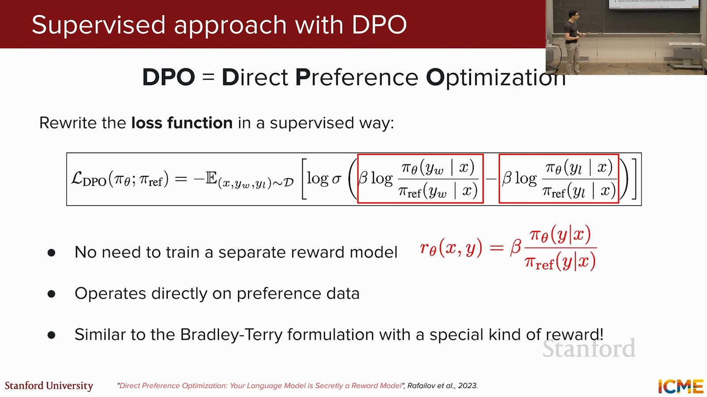
𝓛DPO(πθ; πref) = −𝔼(x,yw,yl)∼𝒟[ log σ( β log (πθ(yw|x)/πref(yw|x)) − β log (πθ(yl|x)/πref(yl|x)) ) ]。赤枠で囲まれた 2 項が「reward の代役」であることが右側の rθ(x,y) の式で示され、下部に 「別の reward model を学習する必要がない」「選好データを直接扱う」「特別な reward を伴う Bradley-Terry 定式化に似ている」の 3 点。1:33:40この式の何がすごいのか
Shervine の解説を追う。
- reward がない。 「見てのとおり、もう reward は関わっていない。
rがない」。 - あるのは選好ペアと sigmoid だけ。 括弧の中身は「勝った completion が起きる確率」と「負けた completion が起きる確率」の引き算。
- Bradley-Terry の姿がそのまま見える。 「よく見ると、Afshin が説明した Bradley-Terry 定式化が見えてくる。
log σの期待値があり、σ の中に差分がある。そしてその差分に、reward 相当の項が見える」。
論文タイトルの意味。 Shervine が式の説明前に触れたのが、DPO 論文のタイトル
“Direct Preference Optimization: Your Language Model is Secretly a Reward Model”（あなたの言語モデルは、実は reward model である）。
「この損失関数から特定できる reward のプレースホルダが、policy の関数として表現されている。
r はどこにもないのに、reward に相当するものを書き下すと、そこにモデルそのものの式が現れる。とても面白い洞察です」。
周辺情報：β の意味と実装での挙動。
β は PPO の目的関数に現れたものと同じ βで、ベースモデルから離れることをどれだけ罰するかを制御する。
Shervine は 「オーダー感としては典型的に 0.1 程度」と述べており、最適化対象は policy のみ、選好ペアは入力として与えられる。
Hugging Face TRL の DPOTrainer 公式ドキュメントも同じ形の損失を掲げ、
β > 0 を「選好シグナルの強さを制御するハイパーパラメータ」と説明している。
さらに興味深い実装上の観察として、同ドキュメントは
「実際には、好ましい completion の尤度を上げるというより、好ましくない completion の尤度を抑えることで目的が達成されることが多い」
と記している ― §2 の「負のシグナルを注入する」という講義の主題が、実装レベルでも観測されているということである。
なお TRL は rewards/chosen = β log(πθ(y⁺|x) / πref(y⁺|x)) を
「暗黙の reward（implicit reward）」としてログに出しており、
「言語モデルが密かに reward model である」という論文タイトルがそのまま指標名になっている。
18. DPO はどこから来たのか ― 5 ステップの導出
Shervine は「では、そもそもどうやってこの式に辿り着いたのか、一緒に考えましょう」と導出をたどった。 スライドは 5 つのステップに分解している。
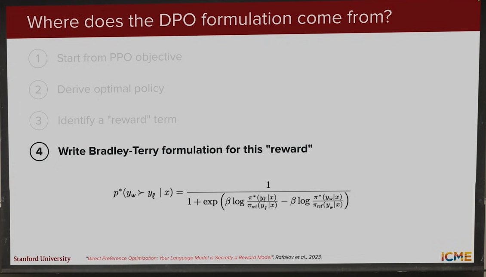
p*(yw ≻ yl | x) = 1 / (1 + exp( β log (π*(yl|x)/πref(yl|x)) − β log (π*(yw|x)/πref(yw|x)) ))。①〜③は淡色で完了済み、④が強調表示されている。1:37:30reward 最大化 − β·KL(π_θ ‖ π_ref)"] S2["② 最適 policy π* を解析的に導く
π*(y|x) ∝ π_ref(y|x)·exp(r(x,y)/β)
（Z(x) は分配関数＝正規化項）"] S3["③ 式を並べ替え、r を π* の関数として表す
r(x,y) = β log(π*(y|x)/π_ref(y|x)) + β log Z(x)"] S4["④ この「reward」を Bradley-Terry に代入
→ Z(x) が相殺し、reward が消える"] S5["⑤ 確率を損失関数に変換
（最尤 → 負の対数尤度）= DPO 損失"] S1 --> S2 --> S3 --> S4 --> S5
クリックで拡大。DPO 損失が導かれるまでの 5 ステップ（講義スライドの構成に基づく）。
各ステップの中身
-
PPO の目的関数から出発する。
「数枚前のスライドで見た PPO の目的関数を思い出してください。reward を最大化し、得られた policy と reference policy の距離を最小化したい。
この reward 最大化と KL divergence 項のトレードオフです。そして
β係数が、ベースモデルからどれだけ離れることを罰するかを制御していました」 -
最適解を解析的に求める。
「この論文がやったのは、この式を書き下し、最適解が何かを解いたこと。最適 policy
π*を表現し、それをrの関数として導出した」。 Shervine が強調したのは 「これらのステップに追加の仮定は一切ない。ただの式変形の連続」という点である。 -
「reward」の項を特定する。
式に現れる
Zは partition function（分配関数）で、単に正規化するためのもの。 「新しく出てきたものではなく、もともと式にあった項の関数」。 項を並べ替えると、rをπ*の関数として書き直せる。「ただの並べ替え。大したことはしていません」。 -
その「reward」で Bradley-Terry を書く。
これが この論文の鍵だと Shervine は言う。
「Bradley-Terry の定式化を再び取り、そこに、先ほど得た最適 reward の式（= policy の関数）を代入した。
結果、reward はもう存在せず、他のパラメータの関数だけが残る。
βと policy だけ」。 - 損失関数に変換する。 「最大化したい確率が手に入ったら、それを損失関数に変えられる ― Afshin が説明したのと同じ手順です」（§9 の MLE → NLL）。
周辺情報：なぜ partition function Z(x) が消えるのか。
ステップ ③ で得られる reward には β log Z(x) という項が残るが、Z(x) は プロンプト x にのみ依存し、応答 y には依存しない。
Bradley-Terry は r(x, yw) − r(x, yl) という同じ x の下での差しか使わないため、この項は綺麗に相殺される。
これが DPO 成立の核心的なトリックであり、
「Z(x) を計算しなくてよい ＝ 全応答にわたる和を取らなくてよい」からこそ、reward model なしで学習が回る。
§8 で述べた「Bradley-Terry では絶対値ではなく差だけが意味を持つ」という性質が、ここで最大限に活かされている。
受講生の質問と回答。
- Q：ベースモデルに対してパラメータを最適化しているのか？ ― 「はい、ただしベースモデルではなく現在のモデルです。ベースモデルはイテレーションを通じて固定されていて、損失関数の中に登場する。 更新するのはもう一方のパラメータで、それが preference tune されたモデルになる。重みの集合は 2 つ ― 1 つは凍結、1 つは更新」
- Q：reference model の代わりに別の大きなモデルを使ってもよいか？ ― 「面白い論点だが、それは別のアルゴリズムになると思う。 preference tuning の段階は、これまで学んできたものに対して応答を揃える営み。 違うモデルから始めて違う確率分布を preference tune すると、損失の観点で意味が通らないことをしてしまうかもしれない。 全体の要点は最後に学習したチェックポイントから始めて、そこからさらに completion の分布を preference tune することだと思う」
19. RLHF と DPO ― どちらを選ぶか
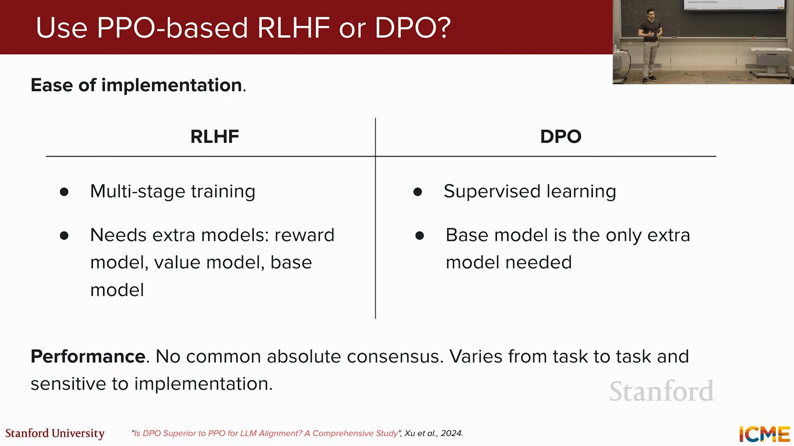
| 観点 | PPO ベース RLHF | DPO |
|---|---|---|
| 学習の構造 | 多段階（reward model → policy 更新） | 教師あり学習の単一ステップ |
| 必要なモデル数 | 4（policy, value, reward, base） | 2（policy πθ と reference πref） |
| 学習の安定性 | 懸念あり。直接的な教師信号がない | 直接的な教師信号があり安定 |
| on/off policy （本レポートによる補足） | on-policy（現在の policy から生成して更新）※講義で明言 | 固定の選好データセットを直接使うため、講義の定義に照らすと off-policy 側に分類される |
| 性能 | 絶対的なコンセンサスなし。タスクによって異なり、実装に敏感 | |
DPO の固有の弱点 ― 分布シフト
「そんなに簡単なら、なぜみんな DPO を使わないのか？」という当然の疑問に、Shervine はこう答えた。
そう簡単ではありません。実際には各手法に一長一短があります。大枠としては PPO のほうが DPO より性能が良い。 そして DPO の良さである「直接的な教師信号」は、モデルが学習時に見た分布とは正確には一致しないものにフィットしてしまうという代償を伴うことがある。
つまり DPO は「reward modeling を一切気にせず、既存の選好データセットを持ってくればよい」という利点そのものが、 分布シフト（distribution shift）を招く。DPO に内在する課題である。 緩和策としては 選好関連データで先に SFT をしておく、あるいは 自分で生成して自分で評価する方法があるが、 「それはまた別のコストを払うことになる」。
周辺情報：参照論文が実際に主張していること。 スライド脚注の “Is DPO Superior to PPO for LLM Alignment? A Comprehensive Study”（Xu et al., 2024／arXiv:2404.10719）は、 まさにこの問いを正面から扱った論文である。アブストラクトの要点は次のとおり ― ChatGPT や Claude のような実サービスは reward ベース（PPO）を使う一方、学術ベンチマークの SOTA は reward-free（DPO）で達成されることが多いという捻れがある。 論文は理論・実験の両面から DPO には根本的な限界がありうることを示し、PPO の性能を引き出す鍵となる要因を洗い出したうえで、 対話からコード生成までの一連のテストベッドで比較し、「PPO はすべてのケースで他の alignment 手法を上回り、難度の高いコードコンペティションで SOTA を達成した」と報告している。 講義の「大枠では PPO のほうが良い」という表現は、この論文の結論に沿ったものである。
実務的な使い分け ― Shervine の結論
「トレードオフは何か、実際にはどちらが使われるのか」という最後の質問への回答が、この講義の実務的な結論である。
すべては計算資源の予算と、どこまで性能にこだわるか、どこまで学習プロセスの子守りをする覚悟があるか次第です。 PPO ― RL の部分 ― は正しくチューニングするのが非常に難しい。最も高い結果を出すが、はるかに少ない労力でほぼその水準に到達できることもある。 素早く preference tuning したい、良い結果は出るが最良ではないかもしれない、というなら DPO が友達です。 強化学習のエキスパートで、自分が何をしているか分かっていて、最後の 1 滴まで性能を絞りたいなら、PPO のほうが良い道かもしれません。
（ログ + T>0 生成 + 人手/LLM 判定）"] Q1 -->|"ある"| Q2{"RL の専門知識と
計算予算はあるか？"} Q2 -->|"限られている"| DPO["DPO
教師あり・モデル2つ
実装が容易で安定"] Q2 -->|"十分にある"| Q3{"最後の1滴まで
性能を絞りたいか？"} Q3 -->|"はい"| PPO["PPO ベース RLHF
モデル4つ・多段階
最高性能だがチューニングが難"] Q3 -->|"いいえ"| DPO Q2 -->|"学習自体を避けたい"| BON["Best-of-N
学習不要だが
推論コスト・レイテンシ増"] D0 --> Q2
クリックで拡大。講義の議論から整理した手法選択の判断フロー（講義スライドそのものではなく、本レポートによる整理）。
20. 効果の実例 ― 「テディベアを洗濯機に入れていい？」
Shervine が 「今日のいちばん好きなパート」と呼んだ締めくくり。前回の講義でも使った同じプロンプトで、 preference tuning の効果を目に見える形で示す。
プロンプト：Can I put my teddy bear in the washer?（テディベアを洗濯機に入れてもいい？）
| モデル | 応答 | 評価 |
|---|---|---|
| Pretrained + instruction tuned （Lecture 4 時点） |
No, it might get damaged. Try hand washing it instead. （いいえ、傷むかもしれません。代わりに手洗いしてください。） |
事実としては正しい（テディベアは実際に手洗いすべき）。だがやや素っ気なく、フレンドリーでない |
| Pretrained + instruction tuned + preference tuned | It's better not to. Your teddy could get hurt! A gentle hand wash is safer. （やめておいたほうがいいですよ。テディが痛んでしまうかもしれません！ やさしく手洗いするほうが安全です。） |
伝えている内容は同じだが、尋ねた人の耳にはるかに心地よいトーン |
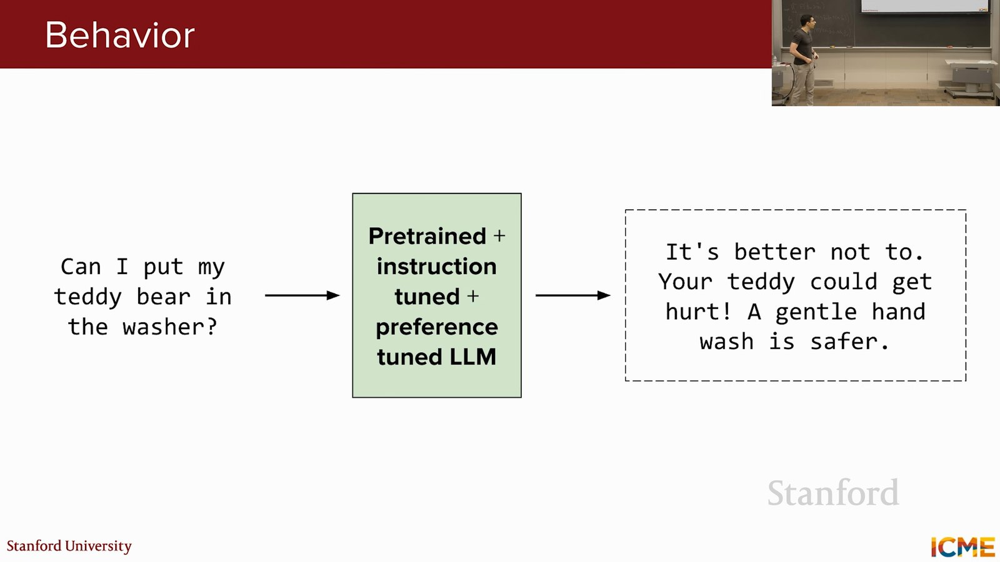
Shervine の締めの言葉が、この講義全体のテーマを一文で言い切っている。
これこそが preference tuning の段階そのものです。私たちは新しい事実を学ばせたいのではない。 既存の completion の分布に焦点を当て、モデルが返すべきものを、人間が好むものに揃えたいのです。
質問した人がテディベアを愛しているかもしれない ― だから、同じ内容でも優しい伝え方をしたい。 「事実の正しさ」ではなく「伝え方」を調整するのが、この段階の仕事である。
21. 講義内 Q&A 総覧
この講義は受講生とのやり取りが多く、質疑の中に本編スライドにない重要な整理が数多く含まれている。時系列で一覧化する。
| 時刻 | 質問 | 回答の要点 |
|---|---|---|
| 10:23 | SFT には LoRA があったが、preference tuning における相当物は？ | LoRA はチューニングするパラメータ数を減らす手法、preference tuning は目的関数の話で、両者は直交する。DPO を LoRA で回すことも可能 |
| 22:20 | 全ペアでこれをやるのは高コストでは？ | 確かに高コスト。ただしバッチ処理などを使う。他の学習手続きと比べて特別に高いわけではないが、SFT に対して追加される部分はある |
| 23:38 | ここで得る reward は LLM を変えられるほど強い信号か？ | SFT より明らかに疎（sparse）。SFT は常に部分入力から次 token を学ばせるが、RLHF は 1 completion あたり約 1 信号。だから「RLHF は sparse signal のアプローチ」と言われる |
| 24:33 | 報酬は token ごとか、全体に対してか？ | 全体（completion）に対して |
| 25:00 | at と st とは何か？ | st = 状態（LLM ではここまでの入力）、at = 取りたい行動（どの token を生成するか） |
| 33:17 | （Bradley-Terry からの）損失関数の提案は？ | 受講生の回答「binary cross entropy」を採用。負の対数尤度が本質で、cross entropy はその特殊ケースと整理 |
| 38:42 | 損失はペアワイズだが、reward model 自体はペアワイズか、ポイントワイズか？ | ポイントワイズ。学習はペアワイズだが、出来上がるのは 1 件を入れて 1 数値を返すモデル |
| 41:07 | タスクによって人間の選好は変わるのでは？ | reward は次元（有用性・安全性など）ごとに定義する。次元ごとに別モデルを持ってもよいし、holistic なスコアでもよい |
| 43:17 | reward は回帰か分類か？ | どちらとも言い切れないが分類寄り。より正確には確率的な定式化 |
| 44:49 | スコアは正規化するのか？ | 通常する。回帰と違いスケールが自由形式なので、リスケーリングが入る |
| 45:14 | reward model の出力とは具体的に何か？ | 連続値。良い出力は 1、悪い出力は −2 や −3 のような値（Best-of-N のスライドで実例が示される） |
| 49:04 | なぜベースモデルから離れすぎたくないのか？ | ①破滅的忘却（獲得済み知識の喪失）②reward hacking（不完全な reward への過剰最適化）③学習の不安定性 |
| 56:22 | KL divergence は正か負か。なぜか？ | 常に非負。証明は Jensen の不等式。0 になるのは 2 分布が等しいとき、かつそのときに限る |
| 1:06:11 | （PPO-Clip の）A とは何か？ | advantage。reward と value function の関数で、「その一手がどれだけ良かったか」を表す |
| 1:10:22 | （clip の折れ点で）微分できないのでは？ | ReLU と同じ。同じ方法で扱える |
| 1:10:51 | なぜベースモデルではなく前イテレーションを使うのか？ | ベースから離れすぎないだけでなく、イテレーション間の更新も極端にしたくないから。学習の安定性向上のための追加制約 |
| 1:11:47 | r はどう定量化されるのか？ | 入力に対してその token が起きる確率（LLM の出力確率分布）の比 |
| 1:21:35 | なぜ選好データで SFT をしないのか？ | SFT では「生成すべきでないもの」を伝える方法がない。ただし「10 分後に、RL でやったことを教師ありでやる方法を見る」＝ DPO の予告 |
| 1:25:31 | Best-of-N の問題は何か？ | ①モデル自体が悪ければ結果も悪い（高 temperature の多数生成で緩和可能）②推論時に何度もモデルを叩く＝コスト増（本命） |
| 1:27:31 | その sigmoid は softmax では？ | Best-of-N では reward model は学習済み前提。σ はペアワイズ学習時のもので、BoN では単に N 回スコアして最大を取るだけ |
| 1:28:34 | すべての応答が悪かったら？ | 正当な懸念。モデルは最低限それなりに良くないといけない |
| 1:29:03 | スコアのスケールに制約はあるか？ | BoN では気にしなくてよい（正規化しても最大は最大）。スケールが効くのは損失関数に入るとき＝ RL |
| 1:42:08 | ベースモデルに対してパラメータを最適化しているのか？ | 更新するのは現在のモデル。ベースモデルは固定で損失関数に登場する。重みの集合は 2 つ ― 1 つ凍結、1 つ更新 |
| 1:42:37 | reference の代わりに別の大きなモデルを使えるか？ | それは別のアルゴリズムになる。preference tuning の要点は最後に学習したチェックポイントから始めることで、意味が通らなくなる恐れ |
| 1:46:20 | トレードオフは何か、実際どちらが使われるか？ | 計算予算と、性能へのこだわり／学習の子守り耐性次第。手早く良い結果なら DPO、RL に精通し最後の 1 滴まで絞るなら PPO |
22. 難しい用語の補足（用語集）
講義中に前提知識として流された用語を、一次資料に基づいて整理する。ここは講義の発言そのものではなく、本レポートによる補足である。
| 用語 | 意味 | この講義での位置づけ |
|---|---|---|
| alignment（整合） | モデルの振る舞いを人間の意図・価値観に合わせること | preference tuning はこの alignment の実装手段のひとつ |
| preference pair | 同一プロンプトに対する「好まれた応答 yw」と「好まれなかった応答 yl」の組 | reward model 学習と DPO の唯一の入力データ |
| policy（方策） | 状態から行動への（確率的な）写像。LLM では次 token の確率分布そのもの | 学習対象。πθ と表記 |
| rollout / completion | モデルがプロンプトに対して生成した応答 1 本まるごと | reward はこの単位で与えられる（token 単位ではない） |
| reward model (RM) | (prompt, response) を入力にスカラースコアを返すモデル | Step 1 で学習し、Step 2 では凍結。BoN でも使う |
| Bradley-Terry モデル | ペア比較データから各対象の潜在的な強さを推定する 1952 年の統計モデル | reward model の損失も DPO の損失も、この定式化が土台 |
| sigmoid（logistic 関数） | σ(x) = 1/(1+e−x)。実数を (0,1) に写す S 字関数 | Bradley-Terry の確率表現に現れる。2 クラスの softmax と一致 |
| 最尤推定（MLE）／負の対数尤度（NLL） | 観測データが最も起きやすくなるパラメータを選ぶ／その対数尤度に負号を付けた損失 | §9 の黒板導出そのもの。cross entropy はその特殊形 |
| KL divergence | Σ p log(p/q)。2 分布の乖離度。非対称で距離ではない。常に非負（Jensen の不等式） | 「ベースモデルから離れすぎない」制約の数学的表現 |
| reward hacking | 不完全な指標に過剰最適化し、指標は上がるが本来の目的は達成されない現象 | KL ペナルティを入れる主要な動機。Goodhart の法則の一形態 |
| 破滅的忘却 | 新しい学習によって既習の知識・能力が失われること | KL ペナルティを入れるもう一つの動機 |
| advantage | ≈ reward − baseline。「期待水準と比べてどれだけ良いか」 | PPO が実際に最大化する量。分散低減により学習が安定・高速化 |
| value function | 部分生成を入力に、policy に従って続けた場合の期待 reward を返す関数（token 単位・回帰） | advantage の baseline を供給。policy と同時学習し、4 モデルの 1 つを占める |
| GAE | Generalized Advantage Estimation。value function を使って policy gradient の分散を下げる指数重み付き推定量 | advantage の実際の計算法。講義は範囲外として深入りせず |
| PPO | Proximal Policy Optimization。同じデータで複数エポックの更新を回せる policy gradient 法 | RLHF の Step 2 で最も一般的なアルゴリズム |
| clip / ε | policy 比 rt(θ) を [1−ε, 1+ε] に切り詰め、1 回の更新幅を制限する仕組み | PPO-Clip の中核。実装上は ε = 0.2 が事実上の標準 |
| β（beta） | KL ペナルティの重み。ベースモデルから離れることをどれだけ罰するか | PPO と DPO の両方に共通して現れる。DPO では典型的に 0.1 程度 |
| on-policy / off-policy | 学習中のモデル自身の生成で学習する／しない | PPO は on-policy、SFT や DPO は自前生成に依存しない |
| Best-of-N (BoN) | N 個生成して reward model で採点し、最良を返す推論時の手法 | RL 学習を回避できるが、コストを推論時に付け替えるだけ |
| DPO | Direct Preference Optimization。reward model を消し、選好ペアだけで policy を直接最適化する教師あり手法 | 必要モデルは policy と reference の 2 つ |
partition function Z(x) | 確率分布を正規化するための和。x にのみ依存し y に依存しない | Bradley-Terry の差分で相殺されるため、DPO では計算不要になる |
| 分布シフト | 学習に使うデータの分布が、モデル自身の生成分布とずれること | DPO 固有の弱点。既存の選好データセットをそのまま使えることの裏返し |
| RLAIF | Reinforcement Learning from AI Feedback。選好ラベルを人間でなく AI が付ける | RLHF の "HF" が人間由来でない場合の呼称 |
| GRPO | Group Relative Policy Optimization。グループ内の相対 reward を advantage に使い、value model を不要にする PPO の変種 | DeepSeekMath 論文が導入。次回 Lecture 6 の主題 |
| LLM-as-a-judge | 強力な LLM に 2 応答を比較採点させ、人手ラベルの代理にする手法 | 選好データのラベル付けにおける proxy の代表格 |
23. まとめ ― 各手法はどのボトルネックを解くか
| 手法 | 解こうとしている問題 | 必要モデル数 | 払うコスト |
|---|---|---|---|
| SFT のみ | タスク遂行と振る舞いの型を教える | 1 | 負のシグナルを表現できない／高品質データの確保がスケールしない |
| PPO ベース RLHF | 選好に沿って policy を直接最適化する | 4 | 2 段階の依存関係・多数のハイパーパラメータ・不安定性・reward hacking |
| Best-of-N | RL 学習をまるごと回避する | 2（SFT + RM） | 推論コストとレイテンシ（無限の予算でも最大値のレイテンシは悪化） |
| DPO | reward model と RL を消して教師ありにする | 2 | 分布シフト／大枠では PPO に性能で劣ることがある |
| GRPO（次回） | PPO から value model を外し、メモリを削る | 3 | グループ生成が必要（Lecture 6 で詳説） |
講義を通した一貫したストーリーは 「4 つのモデルを減らす歴史」である。 PPO の 4 モデルに対し、Best-of-N は学習そのものを捨て、DPO は reward model と value model を数式で消し、 GRPO は value model だけを消す。どれが正解かはタスクと予算次第 ― それが Shervine の最終的な答えだった。
24. 関連レポート
- Stanford CME295 Lecture 4「LLM Training」日本語要約 ― 本講義の直接の前編。pretraining、scaling law、ZeRO、FlashAttention、mixed precision、SFT、LoRA・QLoRA。冒頭の復習パートはこの内容を指している。
- Stanford CME295 Lecture 3「Large Language Models」日本語要約 ― temperature と decoding 戦略の回。§5「T > 0 で 2 回生成して選好ペアを作る」の前提知識。
- Stanford CME295 Lecture 2「Transformer-Based Models & Tricks」日本語要約 ― BERT と
[CLS]token の回。§10「encoder-only を reward model にする選択肢」の背景。 - Stanford CME295 Lecture 1「Transformer」日本語要約 ― Attention と Transformer の基礎。
- Post-training reasoning models on Microsoft Foundry（DEM321）日本語要約 ― GRPO を実務で回す話。次回 Lecture 6 の予習に近い内容。
- Post-training and deploying open-source reasoning models 日本語要約 ― post-training パイプライン全体の実装視点。
- Doc-to-LoRA と X-to-LoRA 派生 日本語要約 ― §3 で触れた LoRA と preference tuning の直交性に関連。
- Distilling models with fine-tuning（DEM322）日本語要約 ― SFT と蒸留の実務。
25. 出典・一次資料
本レポートの直接の出典
- Stanford CME295 Transformers & LLMs | Autumn 2025 | Lecture 5 - LLM tuning（Stanford Online, 2025年11月14日公開・講義 2025年10月31日／1:47:41）
- 公式スライド: fall25-cme295-lecture5.pdf（cme295.stanford.edu）
- CME295 Syllabus（コース全体のスケジュールとスライド一覧）
- コース再生リスト（YouTube）
講義スライドが挙げた原論文
- Ouyang et al., 2022 — “Training language models to follow instructions with human feedback”（InstructGPT。RLHF の 2 段階構成の出典。arXiv:2203.02155）
- Bradley & Terry, 1952 — “The rank analysis of incomplete block designs: I. the method of paired comparisons”（Bradley-Terry 定式化の原典。JSTOR）
- Lambert et al., 2024 — “RewardBench: Evaluating Reward Models for Language Modeling”（reward model のベンチマーク。arXiv:2403.13787）
- Schulman et al., 2017 — “Proximal Policy Optimization Algorithms”（PPO の原論文。PPO-Clip と PPO-KL Penalty の出典。arXiv:1707.06347）
- Schulman et al., 2015 — “High-Dimensional Continuous Control Using Generalized Advantage Estimation”（GAE。講義が推薦図書として挙げた論文。arXiv:1506.02438）
- Shao et al., 2024 — “DeepSeekMath: Pushing the Limits of Mathematical Reasoning in Open Language Models”（GRPO の導入。次回 Lecture 6 の予習用。arXiv:2402.03300）
- Rafailov et al., 2023 — “Direct Preference Optimization: Your Language Model is Secretly a Reward Model”（DPO の原論文。arXiv:2305.18290）
- Xu et al., 2024 — “Is DPO Superior to PPO for LLM Alignment? A Comprehensive Study”（PPO と DPO の比較研究。arXiv:2404.10719）
- Amidi et al., 2024 — “Super Study Guide: Transformers and Large Language Models”（スライド内の図の出典として脚注に記載）
本レポートが補足のために参照した公式ドキュメント
- Hugging Face TRL — Reward Modeling (RewardTrainer)（Bradley-Terry に基づく reward model 損失の実装、選好データ形式）
- Hugging Face TRL — PPO Trainer（
objective/kl・objective/rlhf_reward・val/ratioなどのログ指標、cliprange既定値 0.2） - Hugging Face TRL — DPO Trainer（DPO 損失の定義、β の意味、
rewards/chosenなどの暗黙 reward 指標、DPO 派生損失の一覧）